These notes use content from OpenIntro Statistics Slides by
Mine Cetinkaya-Rundel.
These notes use content from OpenIntro Statistics Slides by
Mine Cetinkaya-Rundel.
In this introductory chapter, we will
Begin with a case study, use the case study to discuss the concepts of
Discuss data basics, variables and types
Introduce basic data collection techniques
Discuss aspects about experiments (case studies)
Objective: Evaluate the effectiveness of cognitive-behavior therapy for chronic fatigue syndrome.
Participant pool: 142 patients who were recruited from referrals by primary care physicians and consultants to a hospital clinic specializing in chronic fatigue syndrome.
Actual participants: Only 60 of the 142 referred patients entered the study. Some were excluded because they didn’t meet the diagnostic criteria, some had other health issues, and some refused to be a part of the study.
The table below shows the distribution of patients with good outcomes at 6-month follow-up. Note that 7 patients dropped out of the study: 3 from the treatment and 4 from the control group. \[ \begin{align} && && {Good Outcome} \\ \hline && && Yes && No && Total \\ \hline {Group} && Treatment && 19 && 8 && 27 \\ && Control && 5 && 21 && 26 \\ \hline && Total && 24 && 29 && 53 \end{align} \]
The table below shows the distribution of patients with good outcomes at 6-month follow-up. Note that 7 patients dropped out of the study: 3 from the treatment and 4 from the control group. \[ \begin{align} && && {Good Outcome} \\ \hline && && Yes && No && Total \\ \hline {Group} && Treatment && 19 && 8 && 27 \\ && Control && 5 && 21 && 26 \\ \hline && Total && 24 && 29 && 53 \end{align} \]
The table below shows the distribution of patients with good outcomes at 6-month follow-up. Note that 7 patients dropped out of the study: 3 from the treatment and 4 from the control group. \[ \begin{align} && && {Good Outcome} \\ \hline && && Yes && No && Total \\ \hline {Group} && Treatment && 19 && 8 && 27 \\ && Control && 5 && 21 && 26 \\ \hline && Total && 24 && 29 && 53 \end{align} \] - Proportion with good outcomes in treatment group: \(19/27 \approx 0.70 \rightarrow 70\%\)
The table below shows the distribution of patients with good outcomes at 6-month follow-up. Note that 7 patients dropped out of the study: 3 from the treatment and 4 from the control group. \[ \begin{align} && && {Good Outcome} \\ \hline && && Yes && No && Total \\ \hline {Group} && Treatment && 19 && 8 && 27 \\ && Control && 5 && 21 && 26 \\ \hline && Total && 24 && 29 && 53 \end{align} \] - Proportion with good outcomes in treatment group:
\[19/27 \approx 0.70 \rightarrow 70\%\] - Proportion with good outcomes in control group:
\[5/26 \approx 0.19 \rightarrow 19\%\]
Do the data show a “real” difference between the groups?
Suppose you flip a coin 100 times. While the chance a coin lands heads in any given coin flip is 50%, we probably wont observe exactly 50 heads. This type of fluctuation is part of almost any type of data generating process.
The observed difference between the two group (\(70\% - 19\% = 51\%\)) may be real, or may be due to natural variation.
Since the difference is quite large, it is more believable that the difference is real.
We need statistical tools to determine if the difference is so large that we should reject the notion that it was due to chance.
Are the results of this study generalizable to all patients with chronic fatigue syndrome?
Are the results of this study generalizable to all patients with chronic fatigue syndrome?
These patients had specific characteristics and volunteered to be a part of this study, therefore they may not be representative of all patients with chronic fatigue syndrome. While we cannot immediately generalize the results to all patients, this first study is encouraging. The method works for patients with some narrow set of characteristics, and that gives hope that it will work, at least to some degree, with other patients.
A survey was conducted on students in an Intro to Stat course. Below are a few of the questions on the survey, and the corresponding variables the data from the responses were stored in:
Data collected on students in a statistics class on a variety of variables:
\[ \begin{align} && \color{red}{variable} && && && && \\ && \color{red}{\downarrow} && && && && \\ \hline Student && gender && intro\_extro && \dots && dread && \\ \hline 1 && male && extrovert && \dots && 3 && \\ 2 && female && extrovert && \dots && 2 && \\ 3 && female && introvert && \dots && 4 && \color{red}{\leftarrow} \\ 4 && female && extrovert && \dots && 2 && \color{red}{observation} \\ \vdots && \vdots && \vdots && \vdots && \vdots && \\ 86 && male && extrovert && \dots && 3 && \\ \hline \end{align} \]
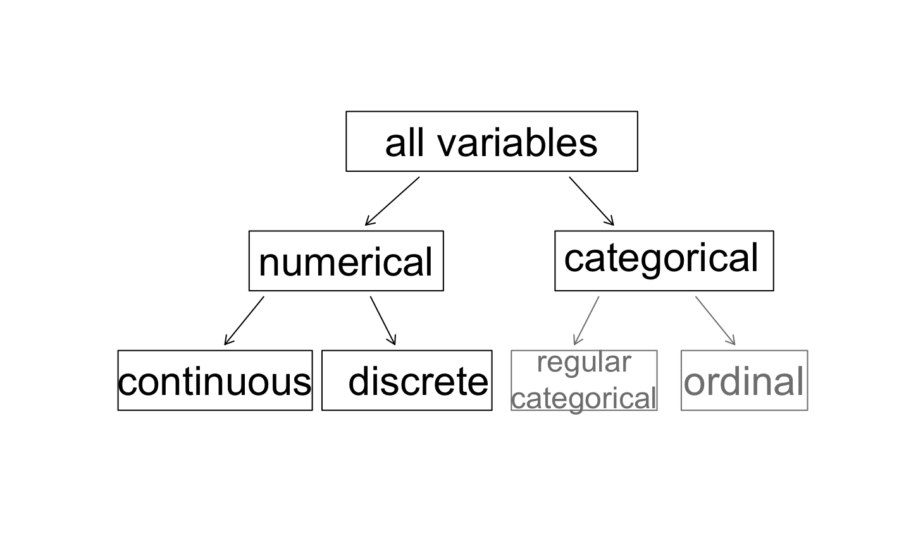
\[ \begin{align} Student && gender && sleep && bedtime && countries && dread \\ \hline 1 && male && 5 && 12-2 && 13 && 3 \\ 2 && female && 7 && 10-12 && 7 && 2 \\ 3 && female && 5.5 && 12-2 && 1 && 4 \\ 4 && female && 7 && 12-2 && && 2 \\ 5 && female && 3 && 12-2 && 1 && 3 \\ 6 && female && 3 && 12-2 && 9 && 4 \\ \hline \end{align} \]
\[ \begin{align} Student && gender && sleep && bedtime && countries && dread \\ \hline 1 && male && 5 && 12-2 && 13 && 3 \\ 2 && female && 7 && 10-12 && 7 && 2 \\ 3 && female && 5.5 && 12-2 && 1 && 4 \\ 4 && female && 7 && 12-2 && && 2 \\ 5 && female && 3 && 12-2 && 1 && 3 \\ 6 && female && 3 && 12-2 && 9 && 4 \\ \hline \end{align} \]
\[ \begin{align} Student && gender && sleep && bedtime && countries && dread \\ \hline 1 && male && 5 && 12-2 && 13 && 3 \\ 2 && female && 7 && 10-12 && 7 && 2 \\ 3 && female && 5.5 && 12-2 && 1 && 4 \\ 4 && female && 7 && 12-2 && && 2 \\ 5 && female && 3 && 12-2 && 1 && 3 \\ 6 && female && 3 && 12-2 && 9 && 4 \\ \hline \end{align} \]
\[ \begin{align} Student && gender && sleep && bedtime && countries && dread \\ \hline 1 && male && 5 && 12-2 && 13 && 3 \\ 2 && female && 7 && 10-12 && 7 && 2 \\ 3 && female && 5.5 && 12-2 && 1 && 4 \\ 4 && female && 7 && 12-2 && && 2 \\ 5 && female && 3 && 12-2 && 1 && 3 \\ 6 && female && 3 && 12-2 && 9 && 4 \\ \hline \end{align} \]
\[ \begin{align} Student && gender && sleep && bedtime && countries && dread \\ \hline 1 && male && 5 && 12-2 && 13 && 3 \\ 2 && female && 7 && 10-12 && 7 && 2 \\ 3 && female && 5.5 && 12-2 && 1 && 4 \\ 4 && female && 7 && 12-2 && && 2 \\ 5 && female && 3 && 12-2 && 1 && 3 \\ 6 && female && 3 && 12-2 && 9 && 4 \\ \hline \end{align} \]
\[ \begin{align} Student && gender && sleep && bedtime && countries && dread \\ \hline 1 && male && 5 && 12-2 && 13 && 3 \\ 2 && female && 7 && 10-12 && 7 && 2 \\ 3 && female && 5.5 && 12-2 && 1 && 4 \\ 4 && female && 7 && 12-2 && && 2 \\ 5 && female && 3 && 12-2 && 1 && 3 \\ 6 && female && 3 && 12-2 && 9 && 4 \\ \hline \end{align} \]
\[ \begin{align} Student && gender && sleep && bedtime && countries && dread \\ \hline 1 && male && 5 && 12-2 && 13 && 3 \\ 2 && female && 7 && 10-12 && 7 && 2 \\ 3 && female && 5.5 && 12-2 && 1 && 4 \\ 4 && female && 7 && 12-2 && && 2 \\ 5 && female && 3 && 12-2 && 1 && 3 \\ 6 && female && 3 && 12-2 && 9 && 4 \\ \hline \end{align} \]
\[ \begin{align} Student && gender && sleep && bedtime && countries && dread \\ \hline 1 && male && 5 && 12-2 && 13 && 3 \\ 2 && female && 7 && 10-12 && 7 && 2 \\ 3 && female && 5.5 && 12-2 && 1 && 4 \\ 4 && female && 7 && 12-2 && && 2 \\ 5 && female && 3 && 12-2 && 1 && 3 \\ 6 && female && 3 && 12-2 && 9 && 4 \\ \hline \end{align} \]
\[ \begin{align} Student && gender && sleep && bedtime && countries && dread \\ \hline 1 && male && 5 && 12-2 && 13 && 3 \\ 2 && female && 7 && 10-12 && 7 && 2 \\ 3 && female && 5.5 && 12-2 && 1 && 4 \\ 4 && female && 7 && 12-2 && && 2 \\ 5 && female && 3 && 12-2 && 1 && 3 \\ 6 && female && 3 && 12-2 && 9 && 4 \\ \hline \end{align} \]
What type of variable is a telephone area code?
What type of variable is a telephone area code?


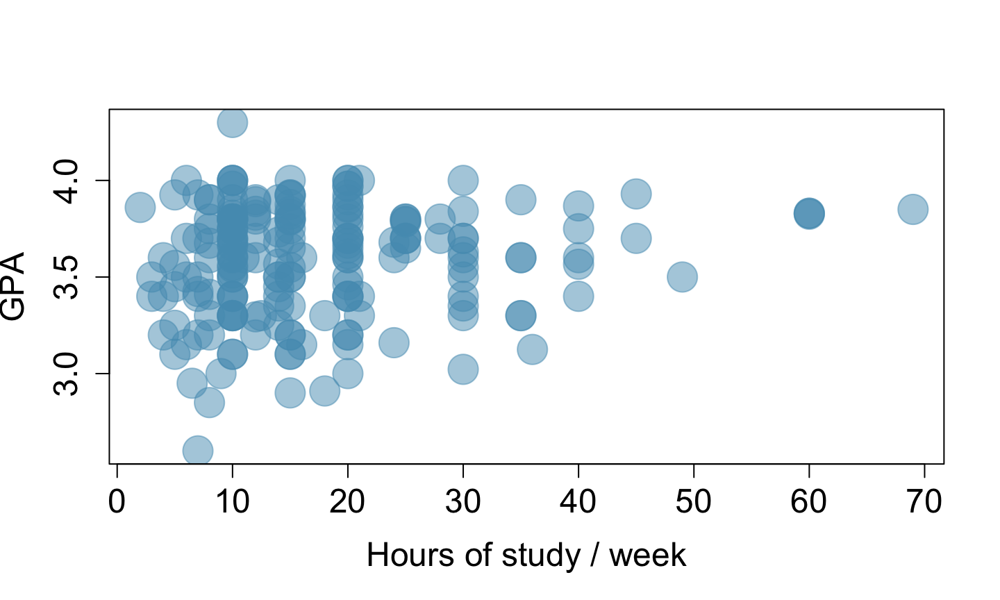
There is one with GPA > 4.0, this is likely a data error.
\[ \text{explanatory variable} \xrightarrow{\text{might affect}} \text{response variable} \]
When two variables show some connection with one another, they are called associated variables.
If two variables are not associated, i.e. there is no evident connection between the two, then they are said to be independent.
In general, association does not imply causation, and causation can only be inferred from a randomized experiment.
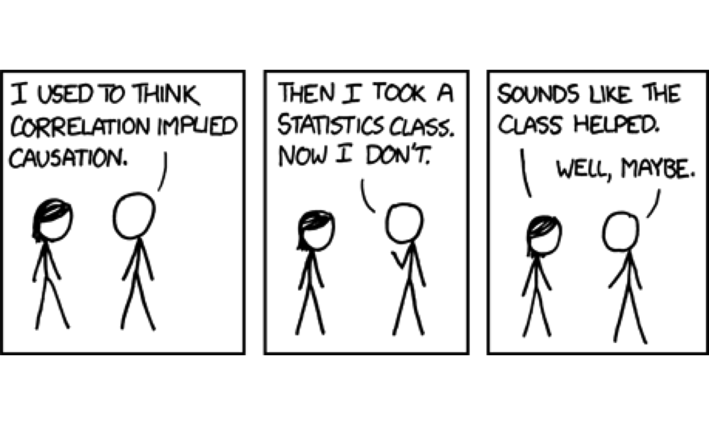
Based on the scatterplot on the right, which of the following statements is correct about the head and skull lengths of possums?

Based on the scatterplot on the right, which of the following statements is correct about the head and skull lengths of possums?
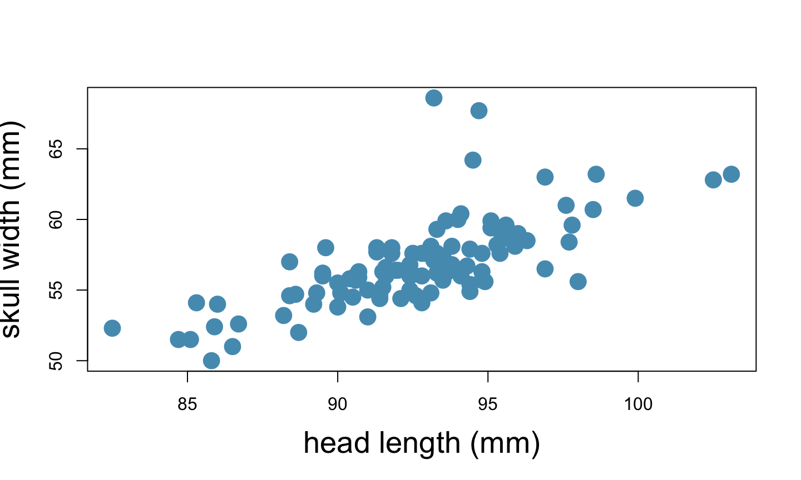
A population is the entire group that you want to draw conclusions about.
A sample is the specific group that you will collect data from. The size of the sample is always less than the total size of the population.
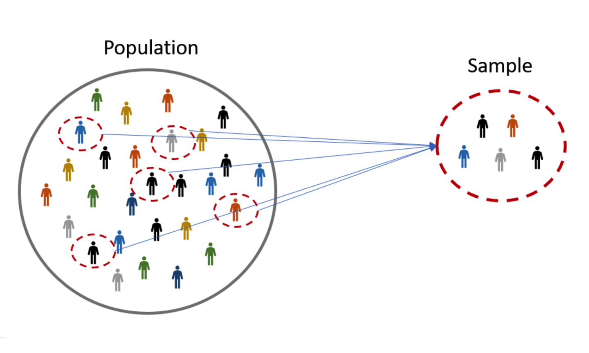

Research question: Can people become better, more efficient runners on their own, merely by running?

Research question: Can people become better, more efficient runners on their own, merely by running?
Population of interest:

Research question: Can people become better, more efficient runners on their own, merely by running?
Population of interest: All people.

Research question: Can people become better, more efficient runners on their own, merely by running?
Population of interest: All people.
Sample: Group of adult women who recently joined a running group.
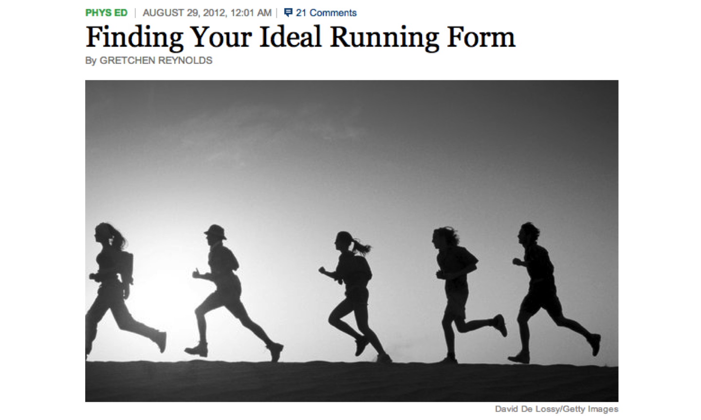
Research question: Can people become better, more efficient runners on their own, merely by running?
Population of interest: All people.
Sample: Group of adult women who recently joined a running group.
Population to which results can be generalized: Adult women, if the data are randomly sampled.
Anti-smoking research started in the 1930s and 1940s when cigarette smoking became increasingly popular. While some smokers seemed to be sensitive to cigarette smoke, others were completely unaffected.
Anti-smoking research was faced with resistance based on anecdotal evidence such as “My uncle smokes three packs a day and he’s in perfectly good health”, evidence based on a limited sample size that might not be representative of the population.
It was concluded that “smoking is a complex human behavior, by its nature difficult to study, confounded by human variability.”
In time researchers were able to examine larger samples of cases (smokers), and trends showing that smoking had negative health impacts became much clearer.
It can be difficult to complete a census: there always seem to be some individuals who are hard to locate or hard to measure. And these difficult-to-find people may have certain characteristics that distinguish them from the rest of the population.
Populations rarely stand still. Even if you could take a census, the population changes constantly, so it’s never possible to get a perfect measure.
Taking a census may be more complex than sampling.
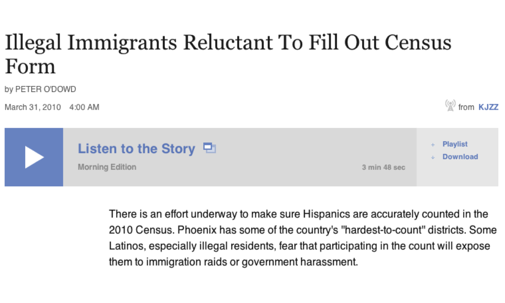
Sampling is natural.
Think about sampling something you are cooking - you taste (examine) a small part of what you’re cooking to get an idea about the dish as a whole.
When you taste a spoonful of soup and decide the spoonful you tasted isn’t salty enough, that’s exploratory analysis.
If you generalize and conclude that your entire soup needs salt, that’s an inference.
For your inference to be valid, the spoonful you tasted (the sample) needs to be representative of the entire pot (the population).
Non-response: If only a small fraction of the randomly sampled people choose to respond to a survey, the sample may no longer be representative of the population.
Voluntary response: Occurs when the sample consists of people who volunteer to respond because they had strong opinions on the issue. Such a sample will also not be representative of the population.
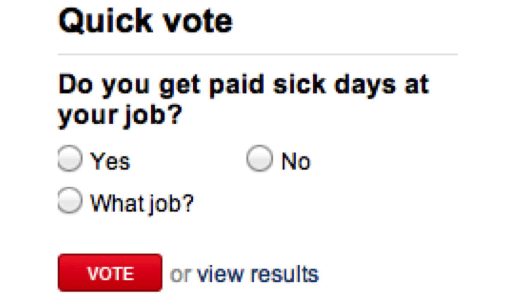
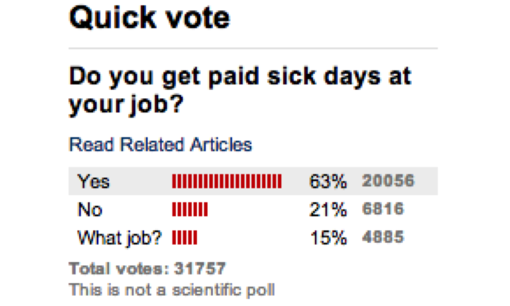
A historical example of a biased sample yielding misleading results:
In 1936, Landon sought the Republican presidential nomination opposing the re-election of FDR.
The Literary Digest polled about 10 million Americans, and got responses from about 2.4 million.
The poll showed that Landon would likely be the overwhelming winner and FDR would get only 43% of the votes.
Election result: FDR won, with 62% of the votes.
The Literary Digest election poll was based on a sample size of 2.4 million, which is huge, but since the sample was biased, the sample did not yield an accurate prediction.
Back to the soup analogy: If the soup is not well stirred, it doesn’t matter how large a spoon you have, it will still not taste right. If the soup is well stirred, a small spoon will suffice to test the soup.
A school district is considering whether it will no longer allow high school students to part at school after two recent accidents where students were severely injures. As a first step, they survey parents by mail, asking them whether or not the parents would object to this policy change. Of 6,000 surveys that go out, 1,200 are returned. Of these 1,200 surveys that were completed, 960 agreed with the policy change and 240 disagreed. Which of the following statements are true?
A school district is considering whether it will no longer allow high school students to part at school after two recent accidents where students were severely injures. As a first step, they survey parents by mail, asking them whether or not the parents would object to this policy change. Of 6,000 surveys that go out, 1,200 are returned. Of these 1,200 surveys that were completed, 960 agreed with the policy change and 240 disagreed. Which of the following statements are true?
Researchers collect data in a way that does not directly interfere with how the data arise.
Results of an observational study can generally be used to establish an association between the explanatory and response variables.
Almost all statistical methods are based on the notion of implied randomness.
If observational data are not collected in a random framework from a population, these statistical methods - the estimates and errors associated with the estimated - are not reliable.
Most commonly used random sampling techniques are simple, stratified and cluster sampling.
Randomly select cases from the population, where there is no implied connection between the points that are selected. 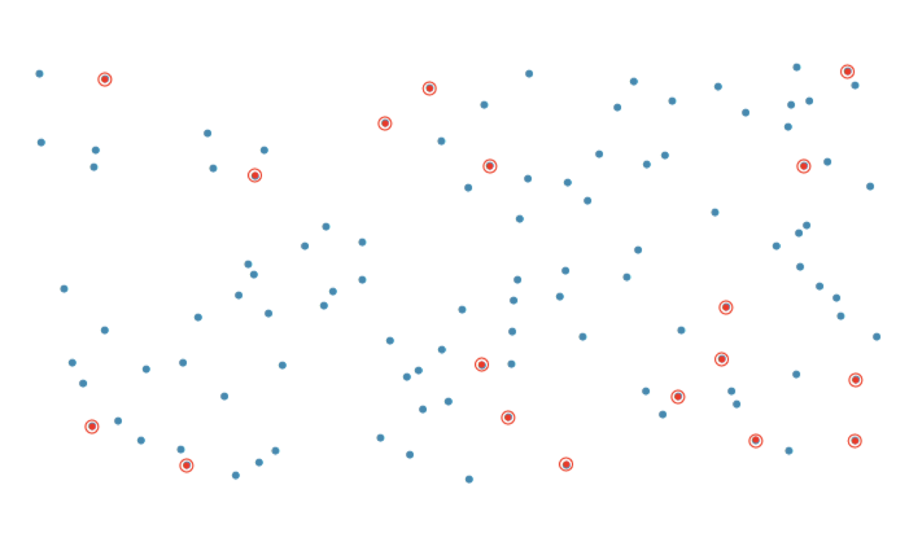
Strata are made up of similar observations. We take a simple random sample from \(\underline{each}\) stratum. 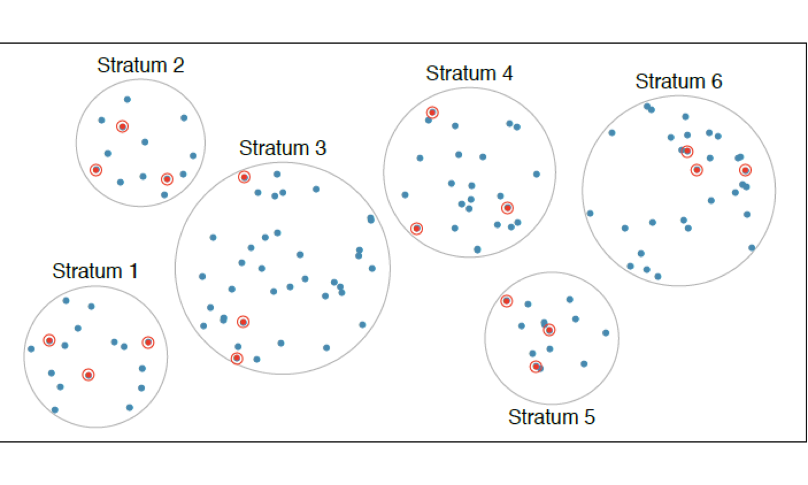
Clusters are usually not made up on homogeneous observations. We take a simple random sample of clusters, and then sample \(\underline{all}\) observations in that cluster. Usually preferred for economical reasons.
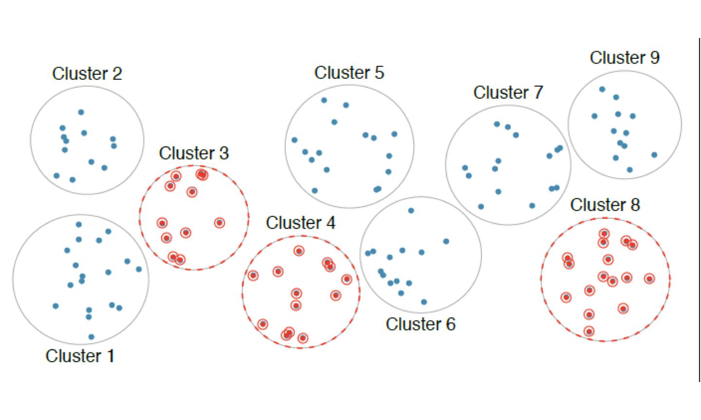
Clusters are usually not made up of homogeneous observations. We take a simple random sample of clusters, and then take a simple random sample of observations from the sampled clusters.
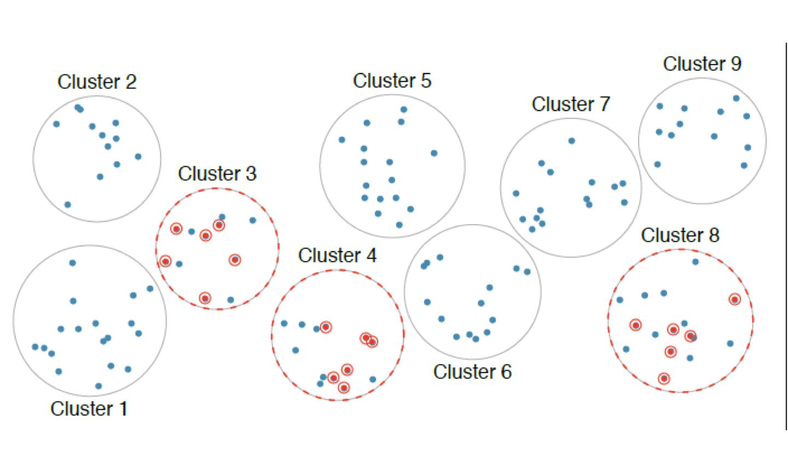
A city council has requested a household survey be conducted in a suburban area of their city. The area is broken into many distinct and unique neighborhoods, some including large homes, some with only apartments. Which approach would likely be the \(\underline{least}\) effective?
A city council has requested a household survey be conducted in a suburban area of their city. The area is broken into many distinct and unique neighborhoods, some including large homes, some with only apartments. Which approach would likely be the \(\underline{least}\) effective?
Control: Control for the (potential) effect of variables other than the ones directly being studied.
Randomize: Randomly assign subjects to treatments, and randomly sample sample from the population whenever possible.
Replicate: Within a study, replicate by collecting a sufficiently large sample. Or replicate the entire study.
Block: If there are variables that are known or suspected to affect the response variable, first group subjects into blocks based on these variables, and then randomize cases within each block to treatment groups.
A study is designed to test the effect of light level and noise level on exam performance of students. The researcher also believes that light and noise levels might have different effects on males and females, so wants to make sure both genders are equally represented in each group. Which of the following is correct?
A study is designed to test the effect of light level and noise level on exam performance of students. The researcher also believes that light and noise levels might have different effects on males and females, so wants to make sure both genders are equally represented in each group. Which of the following is correct?
Factors are conditions we can impose on the experimental units.
Blocking variables are characteristics that the experimental units come with, that we would like to control for.
Blocking is like stratifying, expect used in experimental settings when randomly assigning, as opposed to when sampling.
Placebo: Fake treatment, often used as the control group for medical studies.
Placebo effect: Experimental units showing improvement simply because they believe they are receiving a special treatment.
Blinding: When experimental units do not know whether they are in the control or treatment group.
Double-blind: When both the experimental units and the researchers who interact with the patients do not know who is in the control and who is in the treatment group.
What is the main difference between observational studies and experiments?
What is the main difference between observational studies and experiments?
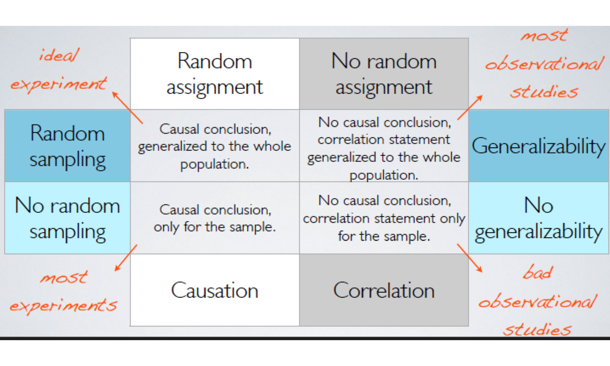